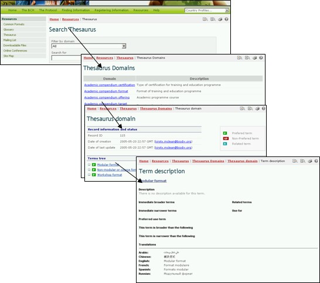

El Tesauro es una lista de términos predefinidos y sinónimos relacionadas, o ‘vocabularios controlados’, usados en un contexto específico. Estos términos son utilizados para registrar o buscar información en las bases de datos del CIISB.
A través del enlace de la página Recursos, el usuario accederá a la página de los Dominios de Tesauro, en la parte superior de la misma se encuentra una herramienta de búsqueda y en la parte inferior muestra una lista de términos dominio en orden alfabético.


La interfase de Búsqueda en el Tesauro, proporciona un menú desplegable para seleccionar los dominios dentro del Tesauro, y un cuadro de búsqueda para ingresar palabras claves o los términos . El usuario entra al dominio y/o la(s) palabra(s) claves(s) específicas y selecciona el botón Buscar.
En la lista de los resultados, se selecciona un término de la columna ID del Tema, para obtener mayor información sobre su utilización en el Portal Central del CIISB. Esto conduce al usuario al registro de Descripción de Términos, el cual proporciona detalles sobre el significado del término y de su utilización en el Portal Central del CIISB y comprende el uso de términos más amplios, más restringidos y los términos preferidos, así como las traducciones en los seis idiomas oficiales de la ONU.
Ejemplo: Si un usuario desea comprender el uso del término “transfronterizo” en las actividades relacionadas con el Protocolo, el usuario ingresa el término en el cuadro de búsqueda y selecciona “Examinar todos los registros” Filtrado por dominio y e ingresa transfronterizo en el cuadro de Búsqueda, en la página Búsqueda en el Tesauro. Seleccione el botón Buscar, y se desplegará una lista de registros que describen la utilización del término transfronterizo en los diferentes dominios dentro del Portal Central del CIISB. Los resultados de la búsqueda (en enero 2008) se despliegan cinco usos del término en los cuatro dominios dentro del CIISB.

Los la lista de términos de dominios brindan acceso a una lista alfabética de los términos utilizados en cada uno de los dominios. Una clave indica cuales son los términos “preferidos”, “no preferidos” o “vinculados”.

Seleccionando un término de la lista arborescente de Términos en la página de Dominios del Tesauro, conduce al usuario al registro de Descripción de Términos. Este registro proporciona detalles sobre el significado del término y cómo es utilizado en el CIISB, y comprende su utilización más general, los más recientes y aquellos preferidos del término y su traducción en los seis idiomas oficiales de ONU. Dentro de la descripción del término, su utilización preferida del término en el vocabulario controlado es un término seleccionado entre los sinónimos que serán utilizados para indexar y con el fin de recuperar. Por ejemplo maize es la utilización de un término preferido corn en el CIISB.